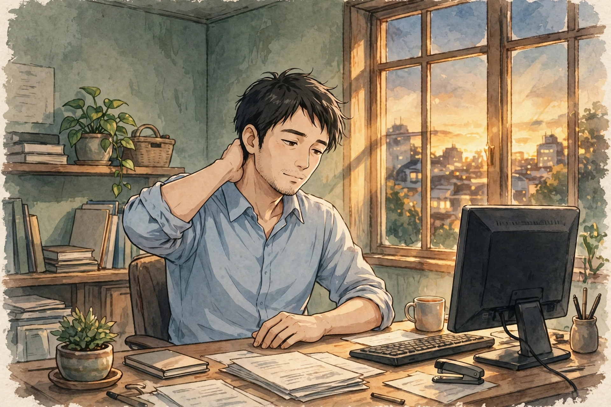
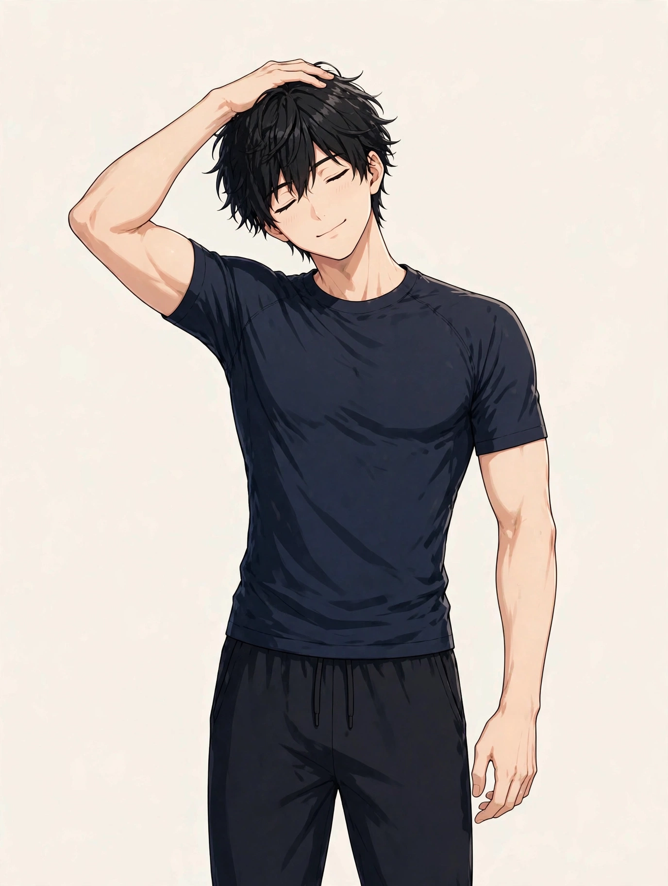

東三国でデスクワーク後に気になる首こり｜男性の画面時間の見直しとセルフケア、受診の目安
男性の画面時間の見直しとセルフケア、受診の目安

「仕事が終わるころに首の後ろが張ってくる」「画面を見続けた日ほど首が重く感じる」「首を回すとゴリゴリした感じがする」。東三国や新大阪、淀川区周辺で働く男性から、デスクワーク後の首こりにまつわるこうした声を聞くことがあります。デスクワーク後の首の感じ方や背景は人によって異なり、一つの原因だけで説明できるものではありません。この記事では原因を断定するのではなく、デスクワーク後に気になる首こりについての一般的な考え方と、考えられる要因、画面時間の見直しと日常で試せるセルフケア、医療機関に相談したほうがよい目安をまとめます。同じ首こりでも、頭の重さまで含めて扱った仕事帰りの首こりと頭の重さについてのコラムや、肩まわりを中心に扱ったデスクワーク後の肩こりについてのコラム、目の疲れ感に絞ったデスクワーク後の目の疲れ感についてのコラム、起き抜けの場面に絞った朝の首こりと肩の重さについてのコラム、週末の場面に絞った週末の首こりについてのコラムとは視点を分け、ここでは「デスクワークのあと」という場面と「画面時間の見直し」に焦点を当てます。お悩み別のページでも首こり・頸部痛や肩こりとしてまとめています。
デスクワーク後の首こりとは：画面作業のあとに感じやすい、首の張りとこわばり
一般に「首こり」と呼ばれる感覚は、首まわりがこわばる、首の後ろが張る、首を動かしにくい、後頭部から首の付け根が重だるい、などとして自覚されることが多いとされています。デスクワークのあとは、画面作業が終わるタイミングと重なって意識されやすく、「午前中は気にならないのに、仕事が終わるころに首の後ろが張ってくる」「会議や資料づくりで画面を見続けた日ほど首が重く感じる」「首を回すとゴリゴリした感じがする」など、出方は人それぞれです。まずは「どんな作業が続いた日に強く感じるか」「首の前側か後ろ側か、どのあたりが気になるか」「休憩をとった日と、とらなかった日で違いがあるか」を自分の言葉で整理しておくと、画面時間や作業環境の見直し、セルフケアの選び方、専門家に相談するときの伝え方がスムーズになります。首の張りとあわせて、肩の重さや目の疲れ感、頭の重さを感じる場合もあり、一日の画面作業の流れ全体を振り返ってみることも一つの手がかりになります。
考えられる要因の整理
デスクワーク後の首こりを意識する背景には、画面を見る姿勢や作業環境の条件に、休憩の取り方やその日の体の様子などが重なっている場合があります。以下は代表的なものとして挙げられる要因ですが、当てはまるかどうかや程度は人によって異なります。
首こりと重なって自覚されやすい部位の位置は、図1のとおりです。

デスクワーク後の首こりも、首そのものだけでなく、後頭部や首の前側を通る胸鎖乳突筋、首の付け根から肩にかけての張りと重なって自覚されることが多いとされます。頭の重さを支える首まわりは、画面を見下ろす姿勢の影響を受けやすい部位です。位置は目安です。
- 長時間の下向きの姿勢と、画面の見下ろし：画面が目線より低い位置にあると、頭が前に傾いたままの姿勢が長く続き、首の後ろ側の筋肉に力が入りっぱなしになると考えられます。ノートパソコンを低い机で使う日ほど首の後ろが張る、スマートフォンをのぞき込む時間が長い日は首が重い、と話す方もいます。
- 画面の高さ・距離と、椅子と机の高さの組み合わせ：画面が近すぎたり遠すぎたりする、椅子に対して机が高すぎる・低すぎるといった組み合わせが合わないと、無意識に首や肩に力が入った姿勢で作業が続く場合があるとされます。モニターの位置を少し変えたら首の感じ方が違った、と話す方もいます。
- 休憩が少なく、同じ姿勢が続くこと：会議や締め切りが続くと、画面から目を離す間もなく同じ姿勢のまま数時間が過ぎることがあります。同じ姿勢が続く時間が長いほど、首まわりの張りを意識しやすいと考えられます。休憩を挟んだ日とそうでない日で、夕方の感じ方が違うという声もあります。
- 肩や背中まで含めた姿勢の崩れ：画面に集中するうちに肩が前に出て背中が丸くなる、椅子に浅く腰かけて背もたれから体が離れるなど、姿勢の崩れが首まわりの張りと重なって自覚される場合があります。首だけの問題に見えても、肩甲骨まわりや背中の張りと一緒に感じる方がいます。
- 目の疲れ感との重なり：画面を長時間見続けた日は、目の重さやかすみといった目の疲れ感とあわせて、首の張りを意識することがあるとされます。目を細めて画面を見る姿勢が、首や肩の力みと重なる場合もあります。
- 冷え・空調の風が首まわりに当たること：オフィスの冷房の風が席の位置によっては首や肩に当たり続け、夕方に首まわりの冷えや張りを意識しやすい場合があります。季節の変わり目に室温の調整が難しい時期は、とくに感じやすいと話す方もいます。
- 睡眠不足や、前日からの疲れの持ち越し：睡眠が短い日や、前日の疲れが残っている日は、同じ作業量でも首の張りを強く意識しやすい、と話す方もいます。残業が続いた週の後半に感じる、休日明けより週末に近い日に感じる、という声もあります。
画面時間の見直しと、日常で試せるセルフケア
画面の環境そのものの見直しと、作業の合間や終業後に試せるものを中心にまとめました。首はデリケートな部位です。無理に引っぱったり、勢いをつけて回したりはせず、痛みやしびれなど様子の変化があるときは無理をしないでください。気になる様子が強いときは、セルフケアより先に医療機関への相談をご検討ください。
- 画面の高さと距離を見直す：画面の上端が目線とほぼ同じ高さになるよう、モニター台や本などで高さを調整し、画面との距離も近すぎない位置に置き直す見直しです。ノートパソコンの場合は、外付けのキーボードと組み合わせて画面だけを高くする方もいます。一度に大きく変えず、数日単位で様子を見ながら調整する方がいます。
- 20〜30分に一度、小休憩をはさむ：タイマーを目安に、20〜30分に一度は画面から目を離し、立ち上がって首や肩を軽く動かす小休憩の取り方です。飲み物を取りに行く、プリントを取りに行くといった用事と組み合わせると、続けやすいという声もあります。
- 首をゆっくり前後・左右に傾ける：背筋を伸ばして座り、頭を前後・左右へゆっくり傾けて、心地よく伸びるところで数呼吸止めます。大きく回さず、無理のない範囲で動かすことが基本です（手順は図2）。手は頭の横に軽く添える程度にし、引っぱらない範囲で行ってください。痛みを感じる方向には無理に傾けないでください。
- 肩甲骨同士を寄せるように胸を開く：両腕を下げたまま、肩甲骨同士を寄せるようにして胸を軽く開く短い動きです。小休憩のときに数回くり返す、背もたれにもたれて深呼吸と合わせるなど、作業の合間に取り入れる方がいます。力を入れすぎず、呼吸を止めない範囲で行ってください。
- 首まわりを温める：帰宅後に、温めた蒸しタオルを首の後ろに数分当てる、入浴のときに首から肩まで湯につかる、といった温め方の見直しです。熱すぎない温度で、気持ちよいと感じる範囲にとどめてください。首元が冷えやすい方は、服装で首まわりを覆う工夫をする場合もあります。
- 目の休憩をはさむ：画面から目を離して遠くを見る、まばたきを意識して数回くり返す、目を閉じて数十秒休める、といった目の休憩です。小休憩とセットにすると続けやすいという声もあります。目の乾きが気になる日は、室内の乾燥にも目を向ける方がいます。
- 終業後は画面から離れる切り替えをとる：仕事が終わったら画面から離れる時間をとり、帰り道に歩く、帰宅後に軽く体を動かすなど、体を動かす切り替えの時間を持つ過ごし方です。私生活の画面時間も含めて一日の画面の流れを振り返ると、見直しの材料になります。

①背筋を伸ばして座る（立つ） ②頭を前後・左右へゆっくり傾け、手は頭の横に軽く添える程度にする ③心地よく伸びるところで数呼吸止め、反対側も同じように行う、が基本の流れです。大きく回したり、力を入れて引っぱったり、勢いをつけたりしないでください。
セルフケアは一度に全部をやろうとせず、作業の合間に続けられそうなものを一つ選ぶところから始めるのがおすすめです。感じ方には個人差があり、その日の作業量や睡眠、室温によっても変わりますので、無理のない範囲で行ってください。市販薬などを使う場合は、用法・用量や対象を商品の表示で確認し、頼る日が長く続くときは専門家への相談もご検討ください。
医療機関への受診を考える目安
次のような様子がある場合は、セルフケアや当院でのケアの前に、整形外科や内科、神経内科などの医療機関への相談をご検討ください。当院は医療機関ではなく、症状の診断や治療は行いません。「デスクワークのせいだろう」と思っていても、背景にほかの原因が関わる場合があります。特に、今までにない痛みや、ほかの症状を伴う場合は、場面にかかわらず早めの相談が大切です。
- 数週間たっても気になる状態が続き、様子が変わらない
- 手や腕にしびれがある、しびれの範囲が広がってきた
- 腕や手に力が入りにくい感じがある、細かい動作がしづらい
- 頭痛やめまい、吐き気を伴っている
- 転倒や、首をぶつけたあとから首の痛みが出ている
- 首の痛みが日に日に強くなっている、夜中に痛みで目が覚める
上記に当てはまらなくても、気になる様子が続くときは、早めに医療機関や専門家へ相談することが大切です。自己判断だけで様子を見続けないことも一つの目安になります。
北辰堂のご案内
北辰堂は、大阪市淀川区東三国二丁目にある男性専用の整体院です。施術歴30年の平賀伸人（鍼灸師・国家資格）が、整体とリラクゼーションを行います。当院では鍼灸施術は行いません。営業は平日・土曜17:00〜22:00、日曜10:00〜22:00の完全予約制です。デスクワーク後の首こりが気になる方は、仕事帰りの平日・土曜の夕方や、日曜の時間帯に、画面の高さや休憩の取り方も含めてご相談いただけます。プライバシーへの配慮のため、詳しい住所はご予約確定後にLINEでご案内します。
料金は60分 初回2,000円／2回目以降6,000円、90分 初回3,000円／2回目以降9,000円で、お支払いは現金のみです。施術を受けたからといって体の状態がどうなるかをお約束することはできませんが、その日の体の状態を確認しながら、首の張りだけでなく姿勢全体の様子も見て、ゆっくり体を預けられる時間をご用意しています。画面の高さや休憩の取り方など、日常で気になっていることも、カウンセリングの際にお聞かせください。気になるお悩みの例はお悩み別一覧にもまとめています。
コースの内容はメニュー・料金、施術者は施術者について、ご予約の流れは当日の流れとLINE予約の下書きづくり、場所についてはアクセスをご覧ください。あわせて仕事帰りの首こりと頭の重さについてのコラムやデスクワーク後の肩こりについてのコラム、デスクワーク後の目の疲れ感についてのコラム、朝の首こりと肩の重さについてのコラム、よくある質問もご参考ください。
ほかのコラム記事
関連するお悩みページ
ご予約・ご相談はLINEから
東三国・新大阪・淀川区周辺で、体のケアの相談先をお探しの方は、LINE公式アカウント（北辰堂）からお気軽にご連絡ください。現在の状態をお聞きしたうえで、施術の進め方をご案内します。
LINEで予約する